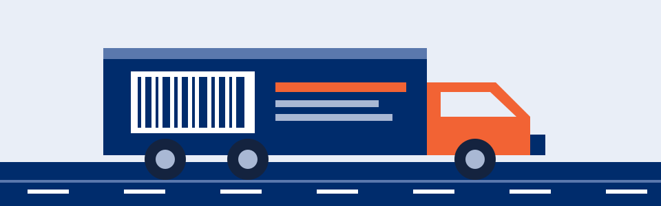
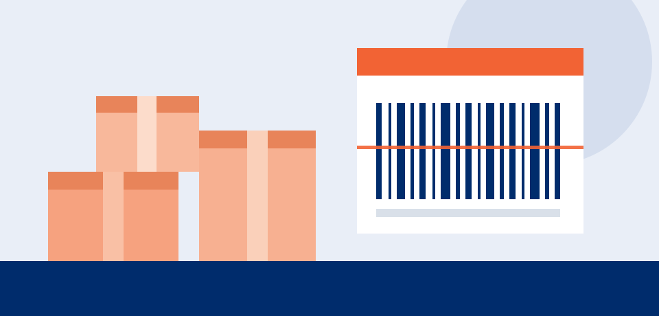
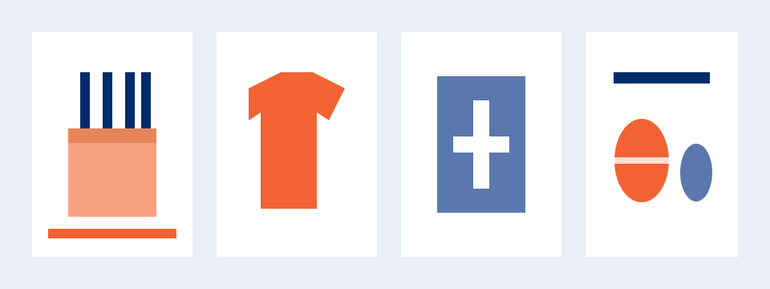
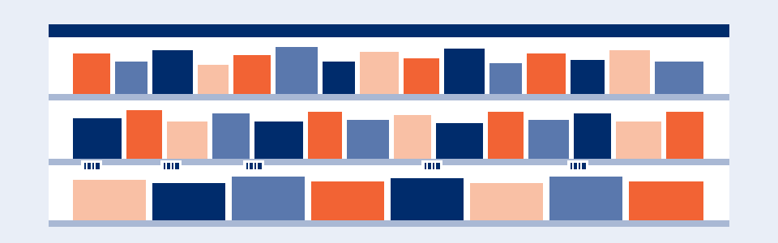

Más de 30 años de productos, empresas y cadena de suministro en Venezuela · 1993–2025
+1,6 Mcódigos registrados por GS1 Venezuela entre 1993 y 2025

68.339códigos en 2025: el mayor volumen desde 2015
+3.500empresas registradas
45sectores GPC
+30años de historia
Fuente: archivos anuales de codificación de GS1 Venezuela 1993–2025 y catálogo oficial GPC. Un código = un GTIN único por año. Los análisis usan los registros clasificados disponibles. Por confidencialidad no se mencionan empresas ni marcas.
GS1 INSIGHTS · EDICIÓN REVISTA1 / 14
CARTA DEL EDITOR
Cada código de barras es una decisión
Detrás de los más de 1,6 millones de códigos que GS1 Venezuela ha registrado entre 1993 y 2025 hay una empresa que decidió poner un producto en el mercado, clasificarlo y hacerlo viajar: del fabricante al pallet, del almacén a la góndola. Leer esos registros es leer el pulso del comercio.
1. El volumen. En 2025 se registraron 68.339 códigos, la cifra más alta desde 2015 (aquel año fueron 72.348). Venían de un piso de unos 41.000 al año entre 2020 y 2022: frente a 2022, el registro creció 64%.
2. Quién lo sostiene. En 2025, tres empresas generaron el 30,1% de todos los códigos del año. Y las 46 empresas que registraron 200 códigos o más generaron el 63,9%; todas las demás, juntas, el 36,1% restante.
3. La fidelidad. De las empresas que codifican por primera vez en un año, una de cada tres vuelve a codificar al año siguiente (entre el 31% y el 35% en los grupos que entraron en 2021, 2022 y 2023).
4. El surtido (retail). Alimentos y Bebidas es el sector con más tipos de producto distintos: 822 en 33 años. Calzado usa solo 14 tipos, pero cada uno acumula en promedio unos 2.300 códigos: un mismo producto en muchas tallas, colores y modelos.
5. La caja (logística). Entre 2018 y 2025, casi 3 de cada 10 códigos (29,2%) identifican un bulto o empaque y no una unidad de venta; y en el 99% de los casos ese bulto está enlazado con su producto.
Este boletín no promete adivinar el futuro. Promete algo más útil: mostrar con datos qué está pasando hoy, dónde hay oportunidad con base sólida y dónde el crecimiento depende de una sola carga.
Buena lectura. Equipo editorial · GS1 Venezuela Insights
EN ESTE NÚMERO
Historia y concentración3
Anatomía de 2025 y fidelidad4
Afiliado típico y recap 1993–20255
Novedad y forma del surtido (retail)6
Productos y dependencia7
El viaje de un producto8
Logística: bultos, packs y tamaños9–10
Benchmark de consumo11
Oportunidades por actor12–13
Cierre14
«Lo que no se codifica, no se mide; lo que no se mide no se controla.»Adaptación de Lord Kelvin

GS1 INSIGHTS · EDICIÓN REVISTA2 / 14
01 · HISTORIA · TENDENCIA Y CRECIMIENTO
Más de treinta años en una sola gráfica
El registro creció por capítulos: de unos 17.000 códigos al año entre 1993 y 1999 a 63.000 entre 2010 y 2019. Tocó fondo entre 2020 y 2022, con unos 41.000 al año, y desde entonces sube: 47.382 en 2023, 51.341 en 2024 y 68.339 en 2025. Aun así, 2025 es solo el quinto año más alto de la serie, por detrás de 2011, 2012, 2009 y 2015.
CÓDIGOS ÚNICOS POR AÑO · 1993–2025, CON PICOS Y CAÍDAS
Picos y caídas son años más altos o más bajos que sus vecinos. Los picos de 2011 (99.774) y 2015 (72.348) se explican por cargas de pocas empresas; 2025 (68.339) es el máximo reciente. El piso reciente fue 2021 (40.940).
02 · QUIÉN CODIFICA
Tres empresas, casi un tercio del año
En 2025, tres empresas (una del sector textil, una de construcción y una de plomería y climatización) aportaron el 30,1% de todos los códigos del año. Una sola carga de catálogo basta para mover el total de un mes.
9.029Una empresa del sector textil: casi todos sus códigos se cargaron en octubre de 2025
7.194Una empresa distribuidora del sector construcción
4.340Una empresa de plomería y climatización, cargados en diciembre
¿SABÍAS QUE…?
Solo 129 prefijos de empresa, el 1,5% de los que han codificado desde 1993, generan la mitad de todos los códigos. En 2011, un único afiliado aportó 38.748 códigos: el 38,8% de aquel año. Entre 2021 y 2025, diez empresas generan el 25% de los códigos: entre ellas, una de calzado (11.131 códigos), una de prendas de vestir (10.486) y una de arte y artesanía (6.288).
EN SIMPLE2025 fue un buen año, pero tres empresas aportaron casi un tercio. Por eso conviene mirar a la vez el volumen y la cantidad de empresas.
GS1 INSIGHTS · EDICIÓN REVISTA3 / 14
03 · LA ANATOMÍA DE 2025
El año lo hicieron los que llegaron, no los de siempre
De los 68.339 códigos de 2025, el 35,4% vino de empresas que codificaban por primera vez en el registro.
04 · FIDELIDAD
Una de cada tres empresas nuevas vuelve a codificar al año siguiente
De las empresas que codifican por primera vez en un año, vuelve a codificar al año siguiente el 34% en promedio (de 1993 a 2024); según el año de entrada, entre el 24% y el 64%. Que una empresa no codifique en un año no significa que se haya ido: puede retomar más adelante. En los grupos que entraron en 2021, 2022 y 2023 volvió entre el 31% y el 35%, y entre el 15% y el 22% sigue activa en 2025.
POR CADA 100 EMPRESAS NUEVAS, CUÁNTAS VUELVEN A CODIFICAR
Cada punto = 5 de cada 100 empresas nuevas del período. Punto de color: empresas que codificaron de nuevo. Punto gris: empresas que no codificaron ese año (no se fueron: pueden retomar más adelante).
1993–1999
676 empresas nuevas
55% volvió a codificar al año siguiente
23,7% sigue codificando en 2025
2000–2009
1.317 empresas nuevas
39,6% volvió a codificar al año siguiente
10,6% sigue codificando en 2025
2010–2019
4.263 empresas nuevas
29,8% volvió a codificar al año siguiente
6,8% sigue codificando en 2025
2020–2024
1.850 empresas nuevas
31,6% volvió a codificar al año siguiente
19% sigue codificando en 2025
DATO CURIOSO
En 2025, el 35,4% de los códigos viene de empresas que están en su primer año; las 261 empresas con más de diez años activos aportan el 17,7%. Y solo 586 empresas han codificado en diez años o más.
EN SIMPLEMás de la mitad de 2025 vino de empresas que llegaron o retomaron la codificación. Retener a las nuevas es la mayor oportunidad.
GS1 INSIGHTS · EDICIÓN REVISTA4 / 14
05 · DOS MUNDOS
El afiliado típico codifica nueve productos al año
La mediana de códigos por empresa es 9 en 2025. Pero el promedio es 54,9, porque unas pocas empresas cargan catálogos enormes: 46 empresas con 200 códigos o más aportan el 63,9% del año, frente a 23 empresas y el 40,6% en 2021.
54%de las empresas que codificaron en 2025 registró 10 productos o menos…
4,3%…y juntas aportan solo ese porcentaje de los códigos del año.
63,9%de los códigos de 2025 lo generan 46 empresas con 200 códigos o más.
Por sector, el contraste es igual de marcado: en el acumulado 1993–2025, cada empresa de Alimentos y Bebidas registra en promedio 41 códigos; una de Prendas de vestir, 234; una de Calzado, 136.
06 · RECAP · MÁS DE 30 AÑOS EN CUATRO CAPÍTULOS
Más de treinta años de mercado: la película completa
Cuatro capítulos desde 1993. Una empresa «codifica» en un año cuando registra al menos un producto; si un año no codifica, sigue siendo parte de GS1 y puede volver a codificar.
CÓDIGOS POR AÑO · 1993–2025, COLOREADO POR CAPÍTULO
93
97
36.467
01
05
73.129
09
99.774
13
41.771
17
40.940
21
68.339
25
1993–1999
2000–2009
2010–2019
2020–2025
1993–1999El arranque
17.101códigos por año (promedio)
246empresas que codificaron por año (promedio)
97empresas que codificaron por primera vez, por año (promedio)
119.710 códigos en el capítulo (8,7% de todos los registrados desde 1993). Año con más códigos: 1999 (36.467).
Sectores con más códigos (% de los códigos del capítulo): Alimentos y Bebidas 16,8% · Construcción 11,2% · Suministros eléctricos 8,3%.
Las empresas que codificaron en el año pasaron de 85 en 1993 a 466 en 1999.
Continuidad: de las empresas que codificaron un año, en promedio el 64,3% volvió a codificar al año siguiente.
2000–2009La consolidación
33.769códigos por año (promedio)
583empresas que codificaron por año (promedio)
132empresas que codificaron por primera vez, por año (promedio)
337.687 códigos en el capítulo (24,5% de todos los registrados desde 1993). Año con más códigos: 2009 (73.129).
Sectores con más códigos (% de los códigos del capítulo): Alimentos y Bebidas 19,9% · Belleza y cuidado personal 12,9% · Construcción 9,4%.
Sector que más ganó peso frente al capítulo anterior: Belleza y cuidado personal (de 6,9% a 12,9%). El que más perdió: Suministros eléctricos (de 8,3% a 1,2%).
Continuidad: de las empresas que codificaron un año, en promedio el 61,1% volvió a codificar al año siguiente.
2010–2019La expansión
63.205códigos por año (promedio)
1.210empresas que codificaron por año (promedio)
426empresas que codificaron por primera vez, por año (promedio)
632.048 códigos en el capítulo (45,8% de todos los registrados desde 1993). Año con más códigos: 2011 (99.774).
Sectores con más códigos (% de los códigos del capítulo): Prendas de vestir 17,9% · Alimentos y Bebidas 16,4% · Belleza y cuidado personal 13,7%.
Sector que más ganó peso frente al capítulo anterior: Prendas de vestir (de 8% a 17,9%). El que más perdió: Construcción (de 9,4% a 5,9%).
Continuidad: de las empresas que codificaron un año, en promedio el 48,4% volvió a codificar al año siguiente.
2020–2025El piso y el rebote
48.455códigos por año (promedio)
1.291empresas que codificaron por año (promedio)
359empresas que codificaron por primera vez, por año (promedio)
290.730 códigos en el capítulo (21,1% de todos los registrados desde 1993). Año con más códigos: 2025 (68.339).
Sectores con más códigos (% de los códigos del capítulo): Alimentos y Bebidas 25,5% · Prendas de vestir 11,8% · Construcción 8%.
Sector que más ganó peso frente al capítulo anterior: Alimentos y Bebidas (de 16,4% a 25,5%). El que más perdió: Belleza y cuidado personal (de 13,7% a 7,2%).
Continuidad: de las empresas que codificaron un año, en promedio el 50,8% volvió a codificar al año siguiente.
EN SIMPLECada capítulo trajo más empresas codificando y más datos; hoy la clasificación llega mucho más fina que en los años noventa.
GS1 INSIGHTS · EDICIÓN REVISTA5 / 14
07 · RETAIL · NOVEDAD Y VARIEDAD EN EL ANAQUEL
Qué sectores lanzan más productos nuevos y cómo se reparte su oferta
Para entender un sector conviene mirar dos cosas: si le llega producto nuevo y si su oferta es variada (muchos tipos distintos) o profunda (muchas versiones del mismo tipo). Aquí comparamos los códigos de 2025 con el promedio anual de 2021–2024 y, en gris pequeño, con el promedio de toda la historia.
¿QUIÉN LANZÓ MÁS NOVEDAD EN 2025? · VECES FRENTE AL PROMEDIO 2021–2024
×2 significa el doble de códigos nuevos que el promedio anual de 2021–2024. Verde: 1,5 veces o más. Naranja: menos que lo habitual. «hist.»: frente al promedio de 1993–2024. Solo sectores con 300 códigos o más en 2025.
Plomería y climatización
×3,05
hist. ×4,74
Cuidado de mascotas
×2,73
hist. ×3,35
Materias primas
×2,7
hist. ×1,08
Construcción
×2,65
hist. ×2,94
Computación
×2,3
hist. ×1,78
Prendas de vestir
×2,29
hist. ×2,14
Automotriz
×1,94
hist. ×1,9
Suministros eléctricos
×1,93
hist. ×1,24
Alimentos y Bebidas
×1,08
hist. ×1,62
Lubricantes
×1,07
hist. ×1,68
Belleza y cuidado personal
×1,05
hist. ×0,74
Limpieza del hogar
×1,01
hist. ×0,99
Hogar y mobiliario
×0,95
hist. ×0,61
Calzado
×0,85
hist. ×2,14
VARIEDAD Y PROFUNDIDAD · 1993–2025
«Tipos de producto»: categorías distintas dentro del sector (por ejemplo, leche, jugos o galletas). «Versiones por tipo»: cuántos códigos hay, en promedio, de cada tipo. En naranja, 1.000 o más.
Sector
Tipos de producto
Versiones por tipo
Calzado
14
2.295
Prendas de vestir
72
2.150
Arte y artesanía
47
295
Construcción
246
350
Asistencia sanitaria
145
297
Plomería y climatización
116
219
Belleza y cuidado personal
168
453
Limpieza del hogar
77
550
Alimentos y Bebidas
822
237
Papelería y celebraciones
117
266
Artículos de cocina
119
246
Hogar y mobiliario
126
399
Automotriz
303
138
×3,05plomería y climatización lanzó tres veces más productos en 2025 que su promedio de 2021–2024 (×4,74 frente a toda su historia)
822 tipostiene Alimentos y Bebidas en 33 años, con 237 versiones por tipo: el sector más variado
×0,85calzado lanzó menos que su promedio reciente; con 14 tipos y 2.295 versiones por tipo es el más profundo
CÓMO LEERLO
Alimentos pide variedad: muchos tipos de producto con pocas versiones de cada uno. Calzado y prendas piden profundidad: pocos tipos con muchísimas versiones (tallas, colores, modelos). Plomería y construcción son los sectores con más producto nuevo frente a su propia historia.
EN SIMPLENovedad no es lo mismo que volumen: un sector pequeño puede estar lanzando mucho, y uno grande puede estar quieto.
GS1 INSIGHTS · EDICIÓN REVISTA6 / 14
08 · PRODUCTOS Y MARCAS
Camisetas, zapatos y pantalones: lo que más se codifica en más de 30 años
Entre 1993 y 2025, el tipo de producto (brick GPC) con más códigos es el de camisas, blusas, polos y camisetas (74.063), con mucha ventaja. Las prendas y el calzado ocupan tres de los cuatro primeros puestos, con la salud en el cuarto.
TIPOS DE PRODUCTO CON MÁS CÓDIGOS · 1993–2025
1Camisas, blusas, polos y camisetas74.063
2Zapatos – General26.778
3Pantalones largos/cortos22.802
4Medicamentos farmacéuticos13.501
5Chocolate y confitería12.625
6Tornillos10.642
7Desinfectantes8.854
8Limpieza/aseo/jabón – Personal8.366
CLASES GPC CON MÁS CÓDIGOS · 1993–2025
Clase = nivel intermedio del GPC, entre familia y tipo de producto (brick).
1Prendas parte superior / tops80.665
2Calzado de uso general29.608
3Ferretería de fijaciones y cierres26.248
4Prendas parte inferior / pantalones25.416
5Limpiadores21.582
6Productos para el cuidado del cabello21.434
7Muebles del hogar y oficina20.118

09 · RADIOGRAFÍA
Qué sectores se sostienen solos y cuáles dependen de una empresa
En Alimentos y Bebidas, la mayor empresa aporta el 6% del sector. En Calzado, el 73%. Este indicador separa los mercados diversificados de los que dependen de un solo catálogo.
SECTOR (2025)
EMPRESAS
CÓD./EMP.
PARTE DE LA MAYOR EMPRESA
LECTURA
Alimentos y Bebidas
809
16
6%
Diversificado
Prendas de vestir
50
227
67%
Dependiente
Construcción
106
84
65%
Dependiente
Asistencia sanitaria
178
27
16%
Diversificado
Plomería y climatización
47
89
72%
Dependiente
Belleza y cuidado personal
170
21
15%
Diversificado
Automotriz
81
40
23%
Diversificado
Calzado
13
175
73%
Dependiente
Papelería y celebraciones
51
35
31%
Intermedio
Limpieza e higiene del hogar
124
13
20%
Diversificado
Arte, artesanía y costura
27
56
40%
Intermedio
Sectores con 1.000 códigos o más en 2025. Diversificado: la mayor empresa aporta hasta el 25%; Intermedio: entre 26% y 49%; Dependiente: 50% o más.
GS1 INSIGHTS · EDICIÓN REVISTA7 / 14
10 · LOGÍSTICA · EL VIAJE DE UN PRODUCTO
Del fabricante a la góndola: dónde entra cada código
Un producto cambia de identidad a medida que avanza: unidad de venta, caja, pallet, ubicación. GS1 tiene un estándar para cada paso; este boletín mide los que están en el registro de codificación.
1
Fabricante
ESTÁNDAR GS1El prefijo de empresa y el GTIN-13 identifican la unidad de venta.
EN EL REGISTROMás de 1,6 millones de códigos de más de 3.500 empresas entre 1993 y 2025. El 99,97% de una muestra de 40.000 códigos de 1993–2025 tiene dígito verificador válido.
2
Clasificación
ESTÁNDAR GS1El GPC ubica cada producto en un segmento, familia, clase y brick.
EN EL REGISTROEl 86,5% de los códigos de 2025 llega a Brick; se han usado 4.733 de los 5.318 tipos desde 1993.
3
Bulto
ESTÁNDAR GS1El GTIN-14 identifica la caja o empaque que contiene la unidad.
EN EL REGISTRO29,2% de los códigos de 2018–2025 son GTIN-14; el 99,3% está enlazado a su GTIN-13.
4
Pallet y transporte
ESTÁNDAR GS1El SSCC identifica la unidad logística (18 dígitos); el GS1-128 lleva datos como lote y vencimiento; el GLN identifica ubicaciones.
EN EL REGISTRONo se mide: el registro no contiene SSCC, GLN ni lotes.
5
Retail
ESTÁNDAR GS1El GTIN-13 se lee en el punto de venta; el surtido se arma con los tipos de producto.
EN EL REGISTROAlimentos y Bebidas tiene 397 tipos de producto activos en 2025; 100 tipos concentran el 42,9% de los códigos a nivel Brick (1993–2025).
6
Consumidor
ESTÁNDAR GS1GS1 Digital Link y los códigos 2D conectan el producto con información en línea.
EN EL REGISTRONo se mide: el registro no indica el tipo de símbolo del código.
LO QUE EL REGISTRO MIDE
Códigos GTIN-13 y GTIN-14 y su enlace.
Clasificación GPC hasta el nivel de brick.
Empresas, fechas de creación y países de comercialización.
LO QUE FALTA PARA VER TODA LA CADENA
Unidades logísticas (SSCC) y ubicaciones (GLN).
Trazabilidad por lote y vencimiento.
Tipo de símbolo y adopción de códigos 2D.
UN DATO QUE VIENE DE LA INDUSTRIA
GS1 impulsa a nivel global el paso a códigos 2D en el punto de venta con la campaña «Sunrise 2027». El registro de codificación no permite medir esa transición hoy: es un dato que habría que sumar a la carga.
EN SIMPLEEl código viaja con el producto: unidad, caja, pallet y estante. Este boletín mide los dos primeros eslabones y muestra qué falta para ver los demás.
GS1 INSIGHTS · EDICIÓN REVISTA8 / 14
11 · LOGÍSTICA Y DATOS TÉCNICOS
La caja también tiene código: el pulso logístico del registro
Un producto tiene dos vidas: la unidad que se vende en el anaquel (GTIN-13) y el bulto o empaque que viaja por la cadena de suministro (GTIN-14). Entre 2018 y 2025, el 29,2% de los códigos identifica bultos, y el 99,3% de esos bultos tiene su unidad registrada: una señal de jerarquías de empaque bien armadas.
29,2%de los códigos de 2018–2025 son GTIN-14 (bultos y empaques)
99,3%de esos bultos tiene su GTIN-13 registrado
62,2%de las empresas registra al menos un GTIN-14 (2018–2025)
99,97%de una muestra de 40.000 códigos (1993–2025) tiene dígito verificador válido
PESO DEL GTIN-14 POR AÑO · 2018–2025
Porcentaje de los códigos de cada año que identifican un bulto o empaque (GTIN-14). En naranja, 2025.
34,4%
2018
35,0%
2019
27,6%
2020
28,6%
2021
29,6%
2022
28,7%
2023
28,6%
2024
20,9%
2025
SECTORES QUE MÁS CODIFICAN BULTOS · 2018–2025
Porcentaje de los códigos del sector que son GTIN-14. Naranja: 35% o más.
Plomería y climatización
41,2%
Limpieza del hogar
38,9%
Cultivos
38,6%
Arte y artesanía
38,5%
Asistencia sanitaria
36,4%
Belleza y cuidado personal
35,3%
Hogar y mobiliario
35,1%
Alimentos y Bebidas
32,4%
Papelería y celebraciones
30,4%
Herramientas
30,1%
Automotriz
29,6%
Artículos de cocina
27,7%
EN SIMPLELa caja y el pallet también se identifican con GTIN-14, y casi todas las cajas registradas están bien enlazadas con su producto.
GS1 INSIGHTS · EDICIÓN REVISTA9 / 14
12 · LOGÍSTICA · CAJAS, PACKS Y TAMAÑOS
De qué tamaño son los productos y cómo se empaquetan
Las descripciones de los productos dicen mucho: cuánto pesan o cuánto contienen y en qué cantidades se venden. Así cambió el tamaño típico de lo que se codifica y por qué importa a la hora de armar pallets.
BULTOS POR CADA 100 UNIDADES · 2018–2025
Naranja: 55 o más bultos por cada 100 unidades. Total: 41,3.
Plomería y climatización
70,0
Limpieza del hogar
63,8
Cultivos
62,9
Arte y artesanía
62,6
Asistencia sanitaria
57,2
Belleza y cuidado personal
54,6
Hogar y mobiliario
54,1
Alimentos y Bebidas
48,0
Papelería y celebraciones
43,7
Herramientas
43,2
Automotriz
41,9
Artículos de cocina
38,4
PACKS MÁS FRECUENTES · ALIMENTOS Y BEBIDAS
12 unidades
9.730
24 unidades
7.053
6 unidades
3.126
4 unidades
1.641
20 unidades
1.593
48 unidades
961
10 unidades
906
2 unidades
618
Códigos cuya descripción indica un pack («x 12 und», «x 24 und») en 1993–2025. El 27,7% de las descripciones de 2020–2025 lo indica; antes la mención era menos frecuente (15,1% en 1993–1999, 9,7% en 2000–2009 y 0,9% en 2010–2019), porque las descripciones no siempre la incluían.
TAMAÑO TÍPICO DE LO QUE SE CODIFICA
Lo que dicen las descripciones
Tamaño mediano (alimentos y bebidas)
1993–99
2000–09
2010–19
2020–25
2025
Sólidos (gramos)
400
400
400
375
300
Líquidos (ml)
700
700
750
750
500
Se extrae del texto de la descripción: lo mencionan el 54% (gramos) y el 14% (mililitros) de los códigos de alimentos y bebidas de toda la historia.
LOS TAMAÑOS MÁS CODIFICADOS · 1993–2025
Sólidos: 1 kg (18.588), 500 g (16.282), 250 g (7.439), 200 g (6.835), 400 g (4.691). Líquidos: 1 L (6.002), 700 ml (2.841), 250 ml (2.382), 500 ml (2.292), 750 ml (1.633).
LECTURA PARA LA LOGÍSTICA
Los múltiplos de 6 mandan: 12 y 24 unidades son los packs más frecuentes de toda la historia, una pista para planear picking, almacenaje y armado de pallets. Durante tres décadas la mediana de líquidos fue de 700–750 ml; en 2025 baja a 500 ml (y la de sólidos, de 375 a 300 g): más unidades pequeñas por caja.
EN SIMPLEPlomería y limpieza registran 70 y 64 bultos por cada 100 unidades; artículos de cocina, 38. El mismo código se mueve de forma muy distinta según el sector.
GS1 INSIGHTS · EDICIÓN REVISTA10 / 14
13 · BENCHMARK NACIONAL
Qué se consume: lo que los fabricantes están lanzando
Cada código es un producto que una empresa decide poner en el mercado, así que la descripción permite ver hacia dónde se mueve la oferta. En bebidas, la lata pasa del 0,5% de los códigos (2010–2019) al 10,0% en 2025, el refresco del 1,4% al 13,2% y el envase individual de 500 ml o menos del 11,9% al 37,5%. En alimentos, el yogurt pasa del 10,4% (2010–2019) al 19,7% de los códigos de lácteos en 2025, y el yogurt griego, que casi no existía antes de 2010, llega al 3,3%.
Cómo leer esta sección. Los cuatro cuadros miden lo mismo, pero los dos de arriba son solo de bebidas y los dos de abajo, solo de alimentos de la despensa. Porcentaje de códigos de bebidas (incluye café, té y alcohólicas) cuya descripción menciona el atributo: 7.980 códigos en 2000–2009, 12.687 en 2010–2019 y 1.871 en 2025. Son registros de productos, no ventas ni consumo. El cambio compara 2025 con 2010–2019. «Mayor emp.» indica cuánto del atributo (2020–2025) aporta la empresa más grande: cuanto más bajo, más amplia la tendencia.
SABORES DE BEBIDAS
2000–2009 2010–2019 2025
Manzana
4,6%
4,7%
7,1%
+2,4 ppmayor emp. 18%
Durazno
2%
3,9%
5,4%
+1,5 ppmayor emp. 21%
Pera
2,5%
2,2%
3,4%
+1,2 ppmayor emp. 17%
Piña
1%
1,5%
3,1%
+1,6 ppmayor emp. 22%
Mora y frutos rojos
0,7%
1%
1,9%
+0,9 ppmayor emp. 34%
Toronja
0,1%
0,1%
0,9%
+0,8 ppmayor emp. 30%
TIPOS DE BEBIDA
2000–2009 2010–2019 2025
Refresco y gaseosa
1,8%
1,4%
13,2%
+11,8 ppmayor emp. 19%
Vino, espumante y sangría
4,8%
2,2%
6,3%
+4,1 ppmayor emp. 20%
Agua
7,9%
6,1%
7,1%
+1 ppmayor emp. 6%
Whisky
1,2%
0,3%
1,7%
+1,4 ppmayor emp. 17%
Ron
2,5%
2,9%
5,3%
+2,4 ppmayor emp. 20%
Jugo y néctar
11,2%
11,5%
8,9%
−2,6 ppmayor emp. 12%
ALIMENTOS · YOGURT Y LÁCTEOS
2000–2009 2010–2019 2025
Yogurt (peso en lácteos)
9,8%
10,4%
19,7%
+9,3 ppmayor emp. 7%
Yogurt natural
1,4%
1,1%
4,5%
+3,4 ppmayor emp. 13%
Yogurt griego
0%
0,9%
3,3%
+2,4 ppmayor emp. 13%
Light o descremado
4,8%
4,2%
5,1%
+0,9 ppmayor emp. 14%
Durazno
1,7%
1,1%
2,3%
+1,2 ppmayor emp. 16%
Fresa
2,2%
2,3%
3,8%
+1,5 ppmayor emp. 11%
El yogurt griego casi no existía antes de 2010 (0,0% en 2000–2009), llega al 5,6% en 2020–2025 y es 3,3% en 2025.
ALIMENTOS · SALSAS Y CONDIMENTOS
2000–2009 2010–2019 2025
BBQ y barbacoa
0,4%
1,4%
2,6%
+1,2 ppmayor emp. 13%
Aderezos
2,6%
2,7%
3,2%
+0,5 ppmayor emp. 27%
Ajo
4,2%
6%
6%
0 ppmayor emp. 6%
Mayonesa
6,8%
7,7%
7,7%
0 ppmayor emp. 13%
Ketchup
6,5%
3,1%
2,7%
−0,4 ppmayor emp. 6%
Picante y ají
5,9%
4,8%
3,8%
−1 ppmayor emp. 11%
La mayonesa llegó al 12,3% en 2020–2025 y cae al 7,7% en 2025.
GS1 INSIGHTS · EDICIÓN REVISTA11 / 14
14 · OPORTUNIDADES POR TIPO DE ACTOR

Qué le dicen estos datos a cada eslabón de la cadena
Las mismas cifras se leen distinto según quién las use. Estas son las señales más claras para quien fabrica, quien vende y quien mueve la mercancía.
FABRICANTES Y MARCASQuieren lanzar o ampliar su oferta
46,1%de los códigos de bebidas de 2025 son bebidas listas para beber
37,5%de las bebidas de 2025 se codifica en envase individual de 500 ml o menos, y la lata ya es el 10,0%
809empresas codificaron productos de alimentos y bebidas en 2025, y la mayor aporta solo el 6,3%
QUÉ HACERPensar el lanzamiento en formatos para llevar (lata y envase individual) y apostar por alimentos y bebidas, un sector con muchas empresas donde entrar no depende de un solo competidor.
DISTRIBUIDORES Y RETAILERSArman surtido y compran a proveedores
397tipos de producto distintos en Alimentos y Bebidas en 2025: el sector con más variedad
42,9%de los códigos clasificados a nivel Brick se concentra en solo 100 tipos de producto (1993–2025)
65–73%es la parte que aporta la mayor empresa en construcción, prendas, plomería y calzado: alto riesgo de proveedor único
QUÉ HACERVariedad en alimentos, núcleo estable en los 100 productos más codificados y proveedores alternativos en los sectores que dependen de una sola empresa.
LOGÍSTICA Y CADENA DE SUMINISTROAlmacenan, despachan y rastrean
29,2%de los códigos de 2018–2025 identifica bultos o empaques (GTIN-14)
41,2%en plomería, 38,9% en limpieza y 38,6% en cultivos: los sectores con más peso de bultos
37,8%de las empresas no registra ningún GTIN-14; el 99,3% de los bultos registrados sí está enlazado a su unidad
QUÉ HACERLlevar la identificación hasta el bulto y el pallet en los sectores con más embalaje: casi todos los bultos ya están enlazados con su producto.
EN SIMPLEFabricar para llevar, comprar con proveedores alternativos e identificar hasta la caja: tres lecturas distintas de la misma realidad.
GS1 INSIGHTS · EDICIÓN REVISTA12 / 14
15 · OPORTUNIDADES CON RESPALDO AMPLIO
Productos en alza que no dependen de un solo competidor
Son clases GPC que crecieron al menos 50% entre 2024 y 2025, con 8 o más empresas detrás y donde la mayor empresa aporta 40% o menos. Es decir, tendencias de mercado y no cargas de una sola empresa.
Clase GPC
Códigos 2024 → 2025
Var.
Empresas
Mayor emp.
Bebidas alcohólicas Alimentos y Bebidas
409 → 619
+51%
71
8%
Leche y sustitutos Alimentos y Bebidas
174 → 322
+85%
60
16%
Bocadillos Alimentos y Bebidas
194 → 344
+77%
37
13%
Salchichas procesadas Alimentos y Bebidas
205 → 317
+55%
45
10%
Nata y sustitutos Alimentos y Bebidas
89 → 200
+125%
45
25%
Muebles para el hogar y oficina Hogar y mobiliario
127 → 416
+228%
19
30%
Vasos no desechables Artículos de cocina
152 → 320
+111%
22
18%
Equipos de aire acondicionado Plomería y climatización
90 → 192
+113%
10
26%
SEÑALES DE ALERTA · CLASES QUE CAEN
Clases grandes (100 códigos o más en 2024) con 8 o más empresas.
Ferretería de fijaciones y cierres 3.412 → 1.251
−63%
Pintura 1.232 → 577
−53%
Suministro de agua y gas 1.086 → 375
−65%
Cuadros, espejos y marcos 574 → 113
−80%
POR DÓNDE ENTRAN LAS EMPRESAS · 1993–2025
Sector de la primera carga de cada empresa. Parte del total de empresas.
Alimentos y Bebidas
57%
Limpieza del hogar
8,1%
Belleza y cuidado personal
7,4%
Asistencia sanitaria
4,6%
Construcción
2,6%
Artículos de cocina
2,5%
Cultivos
2,3%
Hogar y mobiliario
1,7%
PARA QUIEN CAPTA CLIENTES
Alimentos y Bebidas es la puerta de entrada del 57% de las empresas desde 1993, y cada una codifica pocos productos. Limpieza (8,1%) y belleza (7,4%) son los siguientes sectores de entrada. Agosto es el mes de mayor ingreso (953 empresas en 33 años) y una de cada tres empresas nuevas repite al año siguiente.
LOS CINCO SECTORES MÁS GRANDES · 2024 FRENTE A 2025
Códigos únicos por año. En naranja, 2025; a la derecha, el cambio frente a 2024.
Alimentos y Bebidas
12.128
12.785
+5%
Prendas de vestir
5.331
11.330
+113%
Construcción
6.068
8.905
+47%
Salud
4.273
4.778
+12%
Plomería y climatización
1.958
4.199
+114%
EN SIMPLELos productos que más crecen con respaldo amplio están en lácteos, bocadillos y bebidas; las mayores caídas están en ferretería y pintura. Mirar ambos lados evita apostar a una moda de una sola empresa.
GS1 INSIGHTS · EDICIÓN REVISTA13 / 14
16 · CIERRE
Cinco ideas para llevar
1
Codificar cada producto y cada presentación. Lo que no se codifica no se mide: cada código es una referencia que se puede comparar, reponer y vender en toda la cadena.
2
Pensar el lanzamiento desde el formato. En bebidas, el envase individual (37,5%), el refresco y la lata ganan terreno en lo que se registra.
3
Armar el surtido con variedad y con proveedores alternativos. Alimentos y Bebidas es el sector más variado; en construcción, prendas, plomería y calzado, una sola empresa aporta más del 60% de los códigos.
4
Llevar la identificación hasta el bulto y el pallet. El 37,8% de las empresas no registra ningún GTIN-14.
5
Seguir la novedad sector por sector. Plomería y climatización lanzó tres veces más productos en 2025 que su promedio de 2021–2024: ahí hay movimiento.
· DIEZ CIFRAS PARA RECORDAR
68.339códigos en 2025
+33,1%frente a 2024
30,1%de los códigos de 2025 los registraron solo tres empresas
1 de 3empresas nuevas vuelve al año siguiente
9códigos registró en 2025 la empresa típica (mediana del año)
63,9%de los códigos de 2025 los registraron 46 empresas
29,2%son bultos (GTIN-14, 2018–2025)
397tipos de producto distintos en Alimentos y Bebidas en 2025
37,5%de bebidas: envase individual
×3,05novedad en plomería y climatización (2025)
Método: un código es un GTIN único por año. Segmento tomado del catálogo oficial GPC (mayo 2026). «Empresas nuevas»: primera aparición desde 1993. Los benchmarks de bebidas y alimentos buscan menciones en la descripción del producto: son mínimos observables, no participación de mercado. Las ilustraciones no muestran datos. No se mencionan empresas ni marcas. No incluye datos de 2026.
DATOS PARA DECIDIR
Más información sobre el estándar y la codificación en gs1ve.org
Este boletín se actualiza con los nuevos registros de GS1 Venezuela.
EN SIMPLECodificar completo, lanzar con foco en el formato y llevar la identificación desde la unidad hasta el bulto.